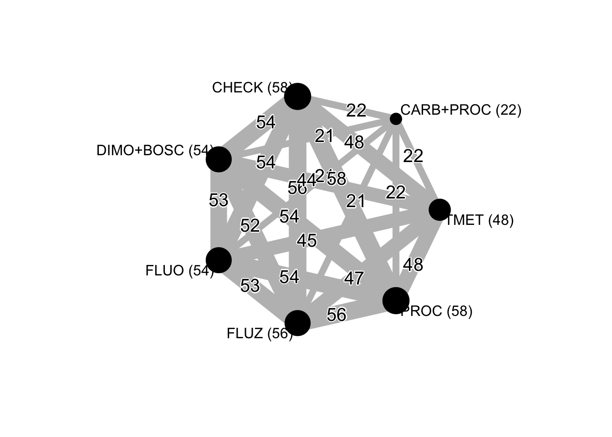

knitr::opts_chunk$set(echo = TRUE, warning = FALSE)Let’s fit an arm-based model using the rma.mv function of metafor to get the estimates for each treatment.
library(tidyverse)
wm_scl <- read.csv("data/dat-scl.csv", h = T, sep = ",")
# Rename the treatments
library(plyr)## -------------------------------------------------------------------------## You have loaded plyr after dplyr - this is likely to cause problems.
## If you need functions from both plyr and dplyr, please load plyr first, then dplyr:
## library(plyr); library(dplyr)## -------------------------------------------------------------------------##
## Attaching package: 'plyr'## The following objects are masked from 'package:dplyr':
##
## arrange, count, desc, failwith, id, mutate, rename, summarise,
## summarize## The following object is masked from 'package:purrr':
##
## compactwm_scl$fungicide2 <- revalue(wm_scl$fungicide2, c("AACHECK-0" = "AACHECK"))
wm_scl$fungicide2 <- revalue(wm_scl$fungicide2, c("DIMO+BOSC-2" = "DIMO+BOSC"))
wm_scl$fungicide2 <- revalue(wm_scl$fungicide2, c("FLUO-2" = "FLUO"))
wm_scl$fungicide2 <- revalue(wm_scl$fungicide2, c("FLUZ-2" = "FLUZ"))
wm_scl$fungicide2 <- revalue(wm_scl$fungicide2, c("PROCY-2" = "PROC"))
wm_scl$fungicide2 <- revalue(wm_scl$fungicide2, c("TIOF-4" = "TMET"))
wm_scl$fungicide2 <- revalue(wm_scl$fungicide2, c("CARB+PROCY-2" = "CARB+PROC"))
detach("package:plyr", unload = TRUE)
# create the log of the inc variable
wm_scl <- wm_scl %>%
mutate(log_scl = log(mean_scl))
# create the sampling variance for the log of inc
wm_scl$vi <- with(wm_scl, (mean_scl_sd^2) / (4 * mean_scl^2))Now we will fit models with CS, HCS and UN matrix-covariance structure. We will then compare them with the Anova to choose among the best model.
library(metafor)
mv_scl_HCS <- rma.mv(log_scl, vi,
mods = ~fungicide2,
random = list(~fungicide2 | study),
struct = "HCS",
method = "ML",
data = wm_scl
)
mv_scl <- rma.mv(log_scl, vi,
mods = ~fungicide2,
random = list(~fungicide2 | study),
struct = "UN",
method = "ML",
control = list(optimizer = "nlm"),
data = wm_scl
)
mv_scl##
## Multivariate Meta-Analysis Model (k = 350; method: ML)
##
## Variance Components:
##
## outer factor: study (nlvls = 58)
## inner factor: fungicide2 (nlvls = 7)
##
## estim sqrt k.lvl fixed level
## tau^2.1 1.5039 1.2263 58 no AACHECK
## tau^2.2 1.9279 1.3885 22 no CARB+PROC
## tau^2.3 1.8904 1.3749 54 no DIMO+BOSC
## tau^2.4 1.9781 1.4065 54 no FLUO
## tau^2.5 2.0879 1.4449 56 no FLUZ
## tau^2.6 1.8262 1.3514 58 no PROC
## tau^2.7 1.9599 1.4000 48 no TMET
##
## rho.AACH rho.CARB rho.DIMO rho.FLUO rho.FLUZ rho.PROC
## AACHECK 1 0.5573 0.8039 0.8882 0.8379 0.7635
## CARB+PROC 0.5573 1 0.8059 0.5765 0.6699 0.9200
## DIMO+BOSC 0.8039 0.8059 1 0.8708 0.8553 0.9158
## FLUO 0.8882 0.5765 0.8708 1 0.8861 0.8210
## FLUZ 0.8379 0.6699 0.8553 0.8861 1 0.8878
## PROC 0.7635 0.9200 0.9158 0.8210 0.8878 1
## TMET 0.9462 0.5974 0.7782 0.9107 0.9098 0.8047
## rho.TMET AACH CARB DIMO FLUO FLUZ PROC TMET
## AACHECK 0.9462 - no no no no no no
## CARB+PROC 0.5974 22 - no no no no no
## DIMO+BOSC 0.7782 54 21 - no no no no
## FLUO 0.9107 54 21 53 - no no no
## FLUZ 0.9098 56 21 52 53 - no no
## PROC 0.8047 58 22 54 54 56 - no
## TMET 1 48 22 44 45 47 48 -
##
## Test for Residual Heterogeneity:
## QE(df = 343) = 23950.1837, p-val < .0001
##
## Test of Moderators (coefficient(s) 2:7):
## QM(df = 6) = 423.4809, p-val < .0001
##
## Model Results:
##
## estimate se zval pval ci.lb ci.ub
## intrcpt 7.8763 0.1633 48.2398 <.0001 7.5563 8.1963
## fungicide2CARB+PROC -2.0974 0.1959 -10.7060 <.0001 -2.4814 -1.7134
## fungicide2DIMO+BOSC -1.9495 0.1219 -15.9911 <.0001 -2.1884 -1.7106
## fungicide2FLUO -1.7918 0.1015 -17.6519 <.0001 -1.9907 -1.5928
## fungicide2FLUZ -1.4327 0.1163 -12.3234 <.0001 -1.6606 -1.2048
## fungicide2PROC -1.5222 0.1279 -11.8988 <.0001 -1.7729 -1.2714
## fungicide2TMET -0.7239 0.0773 -9.3684 <.0001 -0.8753 -0.5724
##
## intrcpt ***
## fungicide2CARB+PROC ***
## fungicide2DIMO+BOSC ***
## fungicide2FLUO ***
## fungicide2FLUZ ***
## fungicide2PROC ***
## fungicide2TMET ***
##
## ---
## Signif. codes: 0 '***' 0.001 '**' 0.01 '*' 0.05 '.' 0.1 ' ' 1We can see below that the UN structure is a better model.
anova(mv_scl_HCS, mv_scl)## df AIC BIC AICc logLik LRT pval QE
## Full 35 851.4587 986.4864 859.4842 -390.7294 23950.1837
## Reduced 15 881.5987 939.4677 883.0358 -425.7993 70.1399 <.0001 23950.1837AIC(mv_scl_HCS)## [1] 881.5987Let’s back-transform (exponential) the estimated mean (and respective 95%CIs) difference of the logs to obtain the response ratio, which is further expressed as percent reduction in sclerotia mass relative to the check treatment (control efficacy) for each fungicide.
efficacy_scl <- data.frame(cbind(
(1 - exp(mv_scl$b)) * 100,
(1 - exp(mv_scl$ci.lb)) * 100,
(1 - exp(mv_scl$ci.ub)) * 100
))
efficacy_sclWe can set linear contrasts between treatments of interest and get the P-valued using the anova function.
anova(mv_scl, L = rbind(
c(0, 1, -1, 0, 0, 0, 0),
c(0, 1, 0, -1, 0, 0, 0),
c(0, 1, 0, 0, -1, 0, 0),
c(0, 1, 0, 0, 0, -1, 0),
c(0, 1, 0, 0, 0, 0, -1),
c(0, 0, 1, -1, 0, 0, 0),
c(0, 0, 1, 0, -1, 0, 0),
c(0, 0, 1, 0, 0, -1, 0),
c(0, 0, 1, 0, 0, 0, -1),
c(0, 0, 0, 1, -1, 0, 0),
c(0, 0, 0, 1, 0, -1, 0),
c(0, 0, 0, 1, 0, 0, -1),
c(0, 0, 0, 0, 1, -1, 0),
c(0, 0, 0, 0, 1, 0, -1),
c(0, 0, 0, 0, 0, 1, -1)
))##
## Hypotheses:
## 1: fungicide2CARB+PROC - fungicide2DIMO+BOSC = 0
## 2: fungicide2CARB+PROC - fungicide2FLUO = 0
## 3: fungicide2CARB+PROC - fungicide2FLUZ = 0
## 4: fungicide2CARB+PROC - fungicide2PROC = 0
## 5: fungicide2CARB+PROC - fungicide2TMET = 0
## 6: fungicide2DIMO+BOSC - fungicide2FLUO = 0
## 7: fungicide2DIMO+BOSC - fungicide2FLUZ = 0
## 8: fungicide2DIMO+BOSC - fungicide2PROC = 0
## 9: fungicide2DIMO+BOSC - fungicide2TMET = 0
## 10: fungicide2FLUO - fungicide2FLUZ = 0
## 11: fungicide2FLUO - fungicide2PROC = 0
## 12: fungicide2FLUO - fungicide2TMET = 0
## 13: fungicide2FLUZ - fungicide2PROC = 0
## 14: fungicide2FLUZ - fungicide2TMET = 0
## 15: fungicide2PROC - fungicide2TMET = 0
##
## Results:
## estimate se zval pval
## 1: -0.1479 0.1596 -0.9269 0.3540
## 2: -0.3056 0.2063 -1.4812 0.1385
## 3: -0.6647 0.1910 -3.4792 0.0005
## 4: -0.5752 0.1304 -4.4107 <.0001
## 5: -1.3735 0.1983 -6.9274 <.0001
## 6: -0.1577 0.1130 -1.3953 0.1629
## 7: -0.5168 0.1195 -4.3235 <.0001
## 8: -0.4273 0.0960 -4.4513 <.0001
## 9: -1.2256 0.1382 -8.8655 <.0001
## 10: -0.3591 0.1109 -3.2391 0.0012
## 11: -0.2696 0.1260 -2.1392 0.0324
## 12: -1.0679 0.0995 -10.7373 <.0001
## 13: 0.0895 0.1064 0.8411 0.4003
## 14: -0.7088 0.0982 -7.2163 <.0001
## 15: -0.7983 0.1278 -6.2449 <.0001In a network meta-analysis, it is important to check whether the results are consistent across the different designs. We included this variable manually in the original dataset and tested the interaction effect of treatments and design group.
mv_scl_incon <- rma.mv(log_scl, vi,
mods = ~fungicide2 * design_scl,
random = list(~factor(study) | design_scl / fungicide2),
struct = "UN",
method = "ML",
control = list(optimizer = "nlm"),
data = wm_scl
)
anova(mv_scl_incon, btt = 9:14)##
## Test of Moderators (coefficient(s) 9:14):
## QM(df = 6) = 29.1009, p-val < .0001anova(mv_scl, mv_scl_incon)## df AIC BIC AICc logLik LRT pval QE
## Full 35 851.4587 986.4864 859.4842 -390.7294 23950.1837
## Reduced 17 852.3770 917.9619 854.2204 -409.1885 36.9183 0.0054 18244.6651First we will rename the treatments with the number of trials (within parenthesis) that each treatment was present.
library(readr)
library(tidyverse)
wm_scl <- read_csv("data/dat-scl.csv")## Parsed with column specification:
## cols(
## study = col_double(),
## year = col_character(),
## location = col_character(),
## state = col_character(),
## elevation = col_double(),
## region = col_character(),
## fungicide2 = col_character(),
## inc_check = col_double(),
## scl_check = col_double(),
## design_scl = col_double(),
## mean_scl = col_double(),
## mean_scl_qmr = col_double(),
## mean_scl_sd = col_double()
## )library(plyr)## -------------------------------------------------------------------------## You have loaded plyr after dplyr - this is likely to cause problems.
## If you need functions from both plyr and dplyr, please load plyr first, then dplyr:
## library(plyr); library(dplyr)## -------------------------------------------------------------------------##
## Attaching package: 'plyr'## The following objects are masked from 'package:dplyr':
##
## arrange, count, desc, failwith, id, mutate, rename, summarise,
## summarize## The following object is masked from 'package:purrr':
##
## compactwm_scl$fungicide2 <- revalue(wm_scl$fungicide2, c("AACHECK-0" = "CHECK (58)"))
wm_scl$fungicide2 <- revalue(wm_scl$fungicide2, c("DIMO+BOSC-2" = "DIMO+BOSC (54)"))
wm_scl$fungicide2 <- revalue(wm_scl$fungicide2, c("FLUO-2" = "FLUO (54)"))
wm_scl$fungicide2 <- revalue(wm_scl$fungicide2, c("FLUZ-2" = "FLUZ (56)"))
wm_scl$fungicide2 <- revalue(wm_scl$fungicide2, c("PROCY-2" = "PROC (58)"))
wm_scl$fungicide2 <- revalue(wm_scl$fungicide2, c("TIOF-4" = "TMET (48)"))
wm_scl$fungicide2 <- revalue(wm_scl$fungicide2, c("CARB+PROCY-2" = "CARB+PROC (22)"))
detach("package:plyr", unload = TRUE)We need to prepare the data to get the network graph. Thus, we used the package netmeta with the function pairwise to calculate the contrasts.
library(netmeta)
pair_scl <- pairwise(
treat = fungicide2,
n = 4,
mean = mean_scl,
sd = mean_scl_sd,
studlab = study,
data = wm_scl,
sm = "ROM"
)net_scl <- netmeta(TE, seTE, treat1, treat2, studlab, data = pair_scl, sm = "ROM", backtransf = TRUE)
summary(net_scl)## Number of studies: k = 58
## Number of treatments: n = 7
## Number of pairwise comparisons: m = 905
## Number of designs: d = 8
##
## Fixed effect model
##
## Treatment estimate (sm = 'ROM'):
## CARB+PROC (22) CHECK (58) DIMO+BOSC (54) FLUO (54)
## CARB+PROC (22) . 0.1806 0.8740 0.7916
## CHECK (58) 5.5375 . 4.8398 4.3833
## DIMO+BOSC (54) 1.1442 0.2066 . 0.9057
## FLUO (54) 1.2633 0.2281 1.1042 .
## FLUZ (56) 1.7004 0.3071 1.4861 1.3459
## PROC (58) 1.5316 0.2766 1.3386 1.2123
## TMET (48) 3.0530 0.5513 2.6683 2.4166
## FLUZ (56) PROC (58) TMET (48)
## CARB+PROC (22) 0.5881 0.6529 0.3275
## CHECK (58) 3.2567 3.6155 1.8138
## DIMO+BOSC (54) 0.6729 0.7470 0.3748
## FLUO (54) 0.7430 0.8248 0.4138
## FLUZ (56) . 1.1102 0.5569
## PROC (58) 0.9007 . 0.5017
## TMET (48) 1.7955 1.9934 .
##
## Lower 95%-confidence limit:
## CARB+PROC (22) CHECK (58) DIMO+BOSC (54) FLUO (54)
## CARB+PROC (22) . 0.1641 0.7871 0.7114
## CHECK (58) 5.0312 . 4.5766 4.1330
## DIMO+BOSC (54) 1.0304 0.1954 . 0.8446
## FLUO (54) 1.1353 0.2151 1.0297 .
## FLUZ (56) 1.5266 0.2882 1.3786 1.2490
## PROC (58) 1.3807 0.2628 1.2528 1.1361
## TMET (48) 2.7628 0.5280 2.5069 2.2654
## FLUZ (56) PROC (58) TMET (48)
## CARB+PROC (22) 0.5280 0.5886 0.2964
## CHECK (58) 3.0571 3.4351 1.7370
## DIMO+BOSC (54) 0.6242 0.6991 0.3521
## FLUO (54) 0.6894 0.7730 0.3879
## FLUZ (56) . 1.0330 0.5205
## PROC (58) 0.8381 . 0.4727
## TMET (48) 1.6781 1.8783 .
##
## Upper 95%-confidence limit:
## CARB+PROC (22) CHECK (58) DIMO+BOSC (54) FLUO (54)
## CARB+PROC (22) . 0.1988 0.9705 0.8808
## CHECK (58) 6.0947 . 5.1182 4.6487
## DIMO+BOSC (54) 1.2705 0.2185 . 0.9712
## FLUO (54) 1.4058 0.2420 1.1840 .
## FLUZ (56) 1.8938 0.3271 1.6021 1.4504
## PROC (58) 1.6990 0.2911 1.4303 1.2937
## TMET (48) 3.3737 0.5757 2.8402 2.5779
## FLUZ (56) PROC (58) TMET (48)
## CARB+PROC (22) 0.6550 0.7243 0.3620
## CHECK (58) 3.4692 3.8054 1.8940
## DIMO+BOSC (54) 0.7254 0.7982 0.3989
## FLUO (54) 0.8007 0.8802 0.4414
## FLUZ (56) . 1.1932 0.5959
## PROC (58) 0.9681 . 0.5324
## TMET (48) 1.9211 2.1154 .
##
## Random effects model
##
## Treatment estimate (sm = 'ROM'):
## CARB+PROC (22) CHECK (58) DIMO+BOSC (54) FLUO (54)
## CARB+PROC (22) . 0.1908 1.2377 1.1492
## CHECK (58) 5.2424 . 6.4885 6.0247
## DIMO+BOSC (54) 0.8080 0.1541 . 0.9285
## FLUO (54) 0.8702 0.1660 1.0770 .
## FLUZ (56) 1.3055 0.2490 1.6158 1.5003
## PROC (58) 1.2207 0.2329 1.5109 1.4029
## TMET (48) 2.6535 0.5062 3.2842 3.0495
## FLUZ (56) PROC (58) TMET (48)
## CARB+PROC (22) 0.7660 0.8192 0.3769
## CHECK (58) 4.0157 4.2945 1.9756
## DIMO+BOSC (54) 0.6189 0.6619 0.3045
## FLUO (54) 0.6665 0.7128 0.3279
## FLUZ (56) . 1.0694 0.4920
## PROC (58) 0.9351 . 0.4600
## TMET (48) 2.0326 2.1737 .
##
## Lower 95%-confidence limit:
## CARB+PROC (22) CHECK (58) DIMO+BOSC (54) FLUO (54)
## CARB+PROC (22) . 0.1448 0.9294 0.8634
## CHECK (58) 3.9794 . 5.3863 5.0023
## DIMO+BOSC (54) 0.6067 0.1279 . 0.7606
## FLUO (54) 0.6537 0.1378 0.8823 .
## FLUZ (56) 0.9827 0.2075 1.3263 1.2324
## PROC (58) 0.9179 0.1940 1.2405 1.1521
## TMET (48) 1.9971 0.4204 2.6858 2.4957
## FLUZ (56) PROC (58) TMET (48)
## CARB+PROC (22) 0.5766 0.6159 0.2836
## CHECK (58) 3.3469 3.5777 1.6408
## DIMO+BOSC (54) 0.5080 0.5434 0.2490
## FLUO (54) 0.5475 0.5854 0.2684
## FLUZ (56) . 0.8808 0.4042
## PROC (58) 0.7701 . 0.3774
## TMET (48) 1.6698 1.7831 .
##
## Upper 95%-confidence limit:
## CARB+PROC (22) CHECK (58) DIMO+BOSC (54) FLUO (54)
## CARB+PROC (22) . 0.2513 1.6482 1.5296
## CHECK (58) 6.9062 . 7.8162 7.2560
## DIMO+BOSC (54) 1.0759 0.1857 . 1.1334
## FLUO (54) 1.1582 0.1999 1.3147 .
## FLUZ (56) 1.7342 0.2988 1.9685 1.8264
## PROC (58) 1.6235 0.2795 1.8401 1.7082
## TMET (48) 3.5256 0.6095 4.0161 3.7261
## FLUZ (56) PROC (58) TMET (48)
## CARB+PROC (22) 1.0176 1.0895 0.5007
## CHECK (58) 4.8181 5.1549 2.3789
## DIMO+BOSC (54) 0.7540 0.8061 0.3723
## FLUO (54) 0.8114 0.8680 0.4007
## FLUZ (56) . 1.2985 0.5989
## PROC (58) 1.1354 . 0.5608
## TMET (48) 2.4742 2.6499 .
##
## Quantifying heterogeneity / inconsistency:
## tau^2 = 0.3453; I^2 = 86.5%
##
## Tests of heterogeneity (within designs) and inconsistency (between designs):
## Q d.f. p-value
## Total 2112.82 286 < 0.0001
## Within designs 1852.47 259 < 0.0001
## Between designs 260.35 27 < 0.0001A network graph is composed of nodes (fungicide treatments) and edges or links between two treatments directly compared in a same trial. This graph allows to visualize how the treatments relate to each other and the number of direct comparisons can be depicted by the thickness of the edges, but also with numbers presented at the top of the links.
netgraph(net_scl,
plastic = FALSE,
col = "gray",
thickness = "number.of.studies",
points = TRUE,
col.points = "black",
cex.points = c("CARB+PROC (22)" = 2.6, "CHECK (58)" = 6, "DIMO+BOSC (54)" = 5.75, "FLUO (54)" = 5.75, "FLUZ (56)" = 5.75, "PROC (58)" = 6, "TMET (48)" = 4.86),
number.of.studies = TRUE,
cex.number.of.studies = 1.25,
col.number.of.studies = "black",
bg.number.of.studies = "white",
multiarm = FALSE,
col.multiarm = "gray",
pos.number.of.studies = 0.60
)